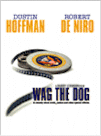
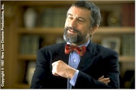
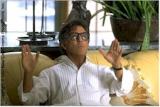

Contents | Features | Reviews | Books | Archives | Store |
 |
|
| Movie Credits | Buy It! |
Wag The Dog
Review by Elias Savada
Posted 2 January 1998
|  | Directed by Barry Levinson Starring
Dustin Hoffman, Robert De Niro, Screenplay by Hilary Henkin and David Mamet, |
Here's a delightfully screwball satire that's as
enjoyable as your favorite ice cream on a hot summer day. Slick and smooth. Director
and/or writer Barry Levinson has won plenty of acclaim before – Rain Man
(1988), Bugsy (1991), Avalon (1990), and Diner (his 1982 directorial
debut) – and Wag the Dog will add another notch on his belt of success. While
he's currently enmeshed on the large-scale Sphere, Levinson made the subject of this
review for a modest $15 million. Opening in New York City and Los Angeles at year's end to
be eligible for a 1997 Academy Award, this oily political fantasy (or perhaps not) is
breaking wide in other markets in early 1998. This is one of those great word-of-mouth
flicks: acerbic screenplay (by Hilary Henkin and David Mamet), great direction (see
above), and a splendid cast featuring alumni of Levinson's earlier oeuvre: Dustin Hoffman
(Rain Man and Sphere), Robert De Niro (Sleepers), Anne Heche (Donnie
Brasco). Sprinkled on top is effective support from Denis Leary and Willie Nelson.
It's late October in a Presidential election year. Less than two weeks before the electorate will go to the polls, the incumbent is purportedly caught with his zipper down with a Firefly girl. Oops. Better call MAACO. Actually, better call crafty spin doctor Conrad Brean (De Niro), who immediately takes control of the situation and produces what seems like an unbelievable counter-attack. Accompanied by uptight, straight-laced Presidential aide Winifred Ames (Heche), Brean enlists the aid of Hollywood producer Stanley Motss (Hoffman), and they fashion a "pageant," concocting a make-believe war with Albania (courtesy of tinsel town's special effects wizards) to deflect public chit-chat about the president's private parts. The film sprints along for two hours as crisis control team spares no expense on behalf of the commander-in-chief.
Music is a key component of the film. I kept cracking up as the entire story maddeningly galloped along, bouncing back from unexpected set-backs or misunderstandings, while numerous stirring pseudo-Oscar caliber anthems are unleashed as "soundtrack" hits to the ensuing production. The unflappable movie mogul brings in song meister Johnny Green (Nelson) to compose these ditties; the resulting "The American Dream" is actually written by Tom Bähler, a co-creator of "We Are the World." Other memorable tunes that add to the mayhem were written by Nelson, Edgar Winter, Merle Haggard, and Huey Lewis. Add into the mix the Fad King (Leary), who wants to get a percentage from war souvenir sales.
 When presidential
contender Senator Neal (Craig T. Nelson) declares the war "over," courtesy of a
leak from the CIA, Brean and Motss decide to up the ante, creating a hero caught behind
enemy lines. They find an army misfit (Woody Harrelson) who has definitely flown over the
cuckoo's nest. As Sergeant William Schumann, he "inspires" songsters Green and
Pops Staples to compose "Good Old Shoe," a bluesy piece that is recorded as a 78
r.p.m. vinyl disc and squirreled away into the bowels of the Library of Congress as a lost
relic of the 1930s. Surreptitious news of the coincidence between the "old" tune
and the soldier's "plight" and, poof, tons of air play for the lost masterpiece.
When presidential
contender Senator Neal (Craig T. Nelson) declares the war "over," courtesy of a
leak from the CIA, Brean and Motss decide to up the ante, creating a hero caught behind
enemy lines. They find an army misfit (Woody Harrelson) who has definitely flown over the
cuckoo's nest. As Sergeant William Schumann, he "inspires" songsters Green and
Pops Staples to compose "Good Old Shoe," a bluesy piece that is recorded as a 78
r.p.m. vinyl disc and squirreled away into the bowels of the Library of Congress as a lost
relic of the 1930s. Surreptitious news of the coincidence between the "old" tune
and the soldier's "plight" and, poof, tons of air play for the lost masterpiece.
The movie forever plays off the assumption that people (and the media) are gullible to this sort of man- (er, person-) handling. At moments – generally those where I was chuckling out of my seat – I would consider reigning in my reason for an instant (much like Data in Star Trek: First Contact when he was tempted by the Borg Queen for a fleeting 0.68 seconds), but this black comedy forces you to throw such caution to the wind. That single temporal juncture is when the spin triumvirate exits the front gates of the White House and pass optically muted white Cherry Blossoms. Anyone who lives in the DC area knows these marvelous trees transform the local landscape only in late March, and unless Election Day has moved seasons ... well, let's see Brean divert is
way out of that faux pas. Actually, I just perused the production notes and the Washington footage was shot during the feature's final three days. Let's see. Filming began January 13. Unless there were large gaps in the schedule (a reported 29-day shoot!), the cast and crew would have been outta here before Easter. Guess I'll have to go see it again or a closer look.
It's been more than three decades since I embraced Stanley Kubrick's Dr. Strangelove or: How I Learned to Stop Worrying and Love the Bomb. While not as deadly a film, Wag the Dog will fatally inflict damage to your funny bone.
Contents | Features | Reviews | Books | Archives | Store
Copyright © 1999 by Nitrate Productions, Inc. All Rights Reserved.